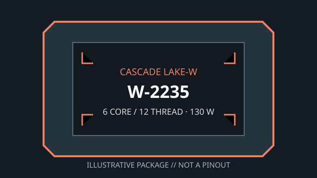

[ INDIVIDUAL WORKSTATION CPU ]
Intel Xeon W-2235
Cascade Lake-W (Xeon W-2200 series), 2019. Exact model: Intel Xeon W-2235. 6 cores/12 threads; 3.80 GHz base / 4.60 GHz maximum turbo; 8.25 MB cache; 130 W TDP; LGA2066.

MODEL ID: Intel Xeon W-2235. Verify board-generation support, complete CPU marking and firmware before fitting this part.
Model specifications
| Architecture / generation | Cascade Lake-W, Xeon W-2200 workstation generation (2019) |
|---|---|
| Exact part | Intel Xeon W-2235 |
| Package / socket | FC-LGA2066 (LGA2066 / Socket R4) |
| Compute and clocks | 6 cores / 12 threads; 3.80 GHz base; up to 4.60 GHz Intel Turbo Boost 2.0 |
| Cache / power | 8.25 MB Intel Smart Cache; 130 W TDP |
| Memory | 4-channel DDR4-2933 ECC; up to 1 TB maximum subject to board, DIMM type and configuration |
| Expansion | 48 PCI Express 3.0 lanes from CPU |
| Board compatibility | Socket LGA2066 C422 workstation board with Xeon W-2200 listed, e.g. Supermicro X11SPA-TF; verify W-2235 CPU support, BIOS revision and board revision with manufacturer. |
Compatibility and service
- Use only a motherboard whose CPU support list and BIOS release explicitly qualify Xeon W-2235/W-2200.
- Use quad-channel DDR4-2933 ECC memory qualified by the board; supported memory type and maximum capacity are board-dependent.
- Cooling and motherboard power delivery must accommodate the 130 W TDP under sustained workstation loads.
- No integrated graphics; discrete GPU/display hardware is necessary.
Sources & further reading
- Intel ARK — Xeon W-2235 model lookupManufacturer's model-specific feature and specification lookup.
- Intel — Xeon W-2200 processors product briefIntel generation-level workstation platform reference.
- Supermicro — X11SPA-TF workstation motherboardManufacturer board documentation; exact support list and BIOS remain controlling.